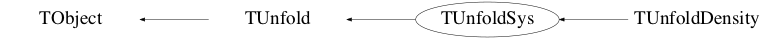

class TUnfoldSys: public TUnfold
TUnfoldSys : public TUnfold TUnfold is used to decompose a measurement y into several sources x given the measurement uncertainties and a matrix of migrations A TUnfoldSys adds error propagation of systematic errors to TUnfold Also, background sources (with errors) can be subtracted. * For most applications, it is better to use TUnfoldDensity * * instead of using TUnfoldSys or TUnfold * If you use this software, please consider the following citation S.Schmitt, JINST 7 (2012) T10003 [arXiv:1205.6201] More documentation and updates are available on http://www.desy.de/~sschmitt The following sources of systematic error are considered in TUnfoldSys (a) uncorrelated errors on the input matrix histA, taken as the errors provided with the histogram. These are typically statistical errors from finite Monte Carlo samples (b) correlated shifts of the input matrix histA. These shifts are taken as one-sigma effects when switchig on a given error soure. several such error sources may be defined (c) a systematic error on the regularisation parameter tau (d) uncorrelated errors on background sources, taken as the errors provided with the background histograms (e) scale errors on background sources In addition there is the (statistical) uncertainty of the input vector (i) Source (a) is providede with the original histogram histA TUnfoldSys(histA,...) Sources (b) are added by calls to AddSysError() The systematic uncertainty on tau (c) is set by SetTauError() Backgound sources causing errors of type (d) and (e) are added by SubtractBackground() NOTE: Systematic errors (a), (b), (c) are propagated to the result AFTER unfolding Background errors (d) and (e) are added to the data errors BEFORE unfolding For this reason: errors of type (d) and (e) are INCLUDED in the standard error matrix and other methods provided by the base class TUnfold: GetOutput() GetEmatrix() whereas errors of type (a), (b), (c) are NOT INCLUDED in the methods provided by the base class TUnfold. Accessing error matrices: The error sources (b),(c) and (e) propagate to shifts of the result. These shifts may be accessed as histograms using the methods GetDeltaSysSource() corresponds to (b) GetDeltaSysTau() corresponds to (c) GetDeltaSysBackgroundScale() corresponds to (e) The error sources (a) and (d) originate from many uncorrelated errors, which in general are NOT uncorrelated on the result vector. Thus, there is no corresponding shift of the output vector, only error matrices are available Method to get error matrix corresponds to error sources GetEmatrixSysUncorr() (a) GetEmatrixSysSource() (b) GetEmatrixSysTau() (c) GetEmatrixSysBackgroundUncorr() (d) GetEmatrixSysBackgroundScale() (e) GetEmatrixInput() (i) GetEmatrix() (i)+(d)+(e) GetEmatrixTotal() (i)+(a)+(b)+(c)+(d)+(e) Error matrices can be added to existing histograms. This is useful to retreive the sum of several error matrices. If the last argument of the GetEmatrixXXX() methods is set to kFALSE, the histogram is not cleared, but the error matrix is simply added to the existing histogram
Function Members (Methods)
public:
| TUnfoldSys(const TUnfoldSys&) | |
| TUnfoldSys(const TH2* hist_A, TUnfold::EHistMap histmap, TUnfold::ERegMode regmode = kRegModeSize, TUnfold::EConstraint constraint = kEConstraintArea) | |
| virtual | ~TUnfoldSys() |
| void | TObject::AbstractMethod(const char* method) const |
| void | AddSysError(const TH2* sysError, const char* name, TUnfold::EHistMap histmap, TUnfoldSys::ESysErrMode mode) |
| virtual void | TObject::AppendPad(Option_t* option = "") |
| virtual void | TObject::Browse(TBrowser* b) |
| static TClass* | Class() |
| virtual const char* | TObject::ClassName() const |
| virtual void | TObject::Clear(Option_t* = "") |
| virtual TObject* | TObject::Clone(const char* newname = "") const |
| virtual Int_t | TObject::Compare(const TObject* obj) const |
| virtual void | TObject::Copy(TObject& object) const |
| virtual void | TObject::Delete(Option_t* option = "")MENU |
| virtual Int_t | TObject::DistancetoPrimitive(Int_t px, Int_t py) |
| virtual Double_t | TUnfold::DoUnfold(Double_t tau) |
| Double_t | TUnfold::DoUnfold(Double_t tau, const TH1* hist_y, Double_t scaleBias = 0.0) |
| virtual void | TObject::Draw(Option_t* option = "") |
| virtual void | TObject::DrawClass() constMENU |
| virtual TObject* | TObject::DrawClone(Option_t* option = "") constMENU |
| virtual void | TObject::Dump() constMENU |
| virtual void | TObject::Error(const char* method, const char* msgfmt) const |
| virtual void | TObject::Execute(const char* method, const char* params, Int_t* error = 0) |
| virtual void | TObject::Execute(TMethod* method, TObjArray* params, Int_t* error = 0) |
| virtual void | TObject::ExecuteEvent(Int_t event, Int_t px, Int_t py) |
| virtual void | TObject::Fatal(const char* method, const char* msgfmt) const |
| virtual TObject* | TObject::FindObject(const char* name) const |
| virtual TObject* | TObject::FindObject(const TObject* obj) const |
| void | GetBackground(TH1* bgr, const char* bgrSource = 0, const Int_t* binMap = 0, Int_t includeError = 3, Bool_t clearHist = kTRUE) const |
| void | TUnfold::GetBias(TH1* bias, const Int_t* binMap = 0) const |
| Double_t | TUnfold::GetChi2A() const |
| Double_t | TUnfold::GetChi2L() const |
| Double_t | GetChi2Sys() |
| Bool_t | GetDeltaSysBackgroundScale(TH1* delta, const char* source, const Int_t* binMap = 0) |
| Bool_t | GetDeltaSysSource(TH1* hist_delta, const char* source, const Int_t* binMap = 0) |
| Bool_t | GetDeltaSysTau(TH1* delta, const Int_t* binMap = 0) |
| virtual Option_t* | TObject::GetDrawOption() const |
| static Long_t | TObject::GetDtorOnly() |
| void | TUnfold::GetEmatrix(TH2* ematrix, const Int_t* binMap = 0) const |
| void | GetEmatrixInput(TH2* ematrix, const Int_t* binMap = 0, Bool_t clearEmat = kTRUE) |
| void | GetEmatrixSysBackgroundScale(TH2* ematrix, const char* source, const Int_t* binMap = 0, Bool_t clearEmat = kTRUE) |
| void | GetEmatrixSysBackgroundUncorr(TH2* ematrix, const char* source, const Int_t* binMap = 0, Bool_t clearEmat = kTRUE) |
| void | GetEmatrixSysSource(TH2* ematrix, const char* source, const Int_t* binMap = 0, Bool_t clearEmat = kTRUE) |
| void | GetEmatrixSysTau(TH2* ematrix, const Int_t* binMap = 0, Bool_t clearEmat = kTRUE) |
| void | GetEmatrixSysUncorr(TH2* ematrix, const Int_t* binMap = 0, Bool_t clearEmat = kTRUE) |
| void | GetEmatrixTotal(TH2* ematrix, const Int_t* binMap = 0) |
| Double_t | TUnfold::GetEpsMatrix() const |
| void | TUnfold::GetFoldedOutput(TH1* folded, const Int_t* binMap = 0) const |
| virtual const char* | TObject::GetIconName() const |
| void | TUnfold::GetInput(TH1* inputData, const Int_t* binMap = 0) const |
| void | TUnfold::GetInputInverseEmatrix(TH2* ematrix) |
| void | TUnfold::GetL(TH2* l) const |
| virtual Double_t | TUnfold::GetLcurveX() const |
| virtual Double_t | TUnfold::GetLcurveY() const |
| void | TUnfold::GetLsquared(TH2* lsquared) const |
| virtual const char* | TObject::GetName() const |
| Int_t | TUnfold::GetNdf() const |
| void | TUnfold::GetNormalisationVector(TH1* s, const Int_t* binMap = 0) const |
| Int_t | TUnfold::GetNpar() const |
| Int_t | TUnfold::GetNr() const |
| virtual char* | TObject::GetObjectInfo(Int_t px, Int_t py) const |
| static Bool_t | TObject::GetObjectStat() |
| virtual Option_t* | TObject::GetOption() const |
| void | TUnfold::GetOutput(TH1* output, const Int_t* binMap = 0) const |
| void | TUnfold::GetProbabilityMatrix(TH2* A, TUnfold::EHistMap histmap) const |
| Double_t | TUnfold::GetRhoAvg() const |
| Double_t | TUnfold::GetRhoI(TH1* rhoi, const Int_t* binMap = 0, TH2* invEmat = 0) const |
| void | TUnfold::GetRhoIJ(TH2* rhoij, const Int_t* binMap = 0) const |
| void | GetRhoItotal(TH1* rhoi, const Int_t* binMap = 0, TH2* invEmat = 0) |
| Double_t | TUnfold::GetRhoMax() const |
| Double_t | TUnfold::GetTau() const |
| virtual const char* | TObject::GetTitle() const |
| static const char* | TUnfold::GetTUnfoldVersion() |
| virtual UInt_t | TObject::GetUniqueID() const |
| virtual Bool_t | TObject::HandleTimer(TTimer* timer) |
| virtual ULong_t | TObject::Hash() const |
| virtual void | TObject::Info(const char* method, const char* msgfmt) const |
| virtual Bool_t | TObject::InheritsFrom(const char* classname) const |
| virtual Bool_t | TObject::InheritsFrom(const TClass* cl) const |
| virtual void | TObject::Inspect() constMENU |
| void | TObject::InvertBit(UInt_t f) |
| virtual TClass* | IsA() const |
| virtual Bool_t | TObject::IsEqual(const TObject* obj) const |
| virtual Bool_t | TObject::IsFolder() const |
| Bool_t | TObject::IsOnHeap() const |
| virtual Bool_t | TObject::IsSortable() const |
| Bool_t | TObject::IsZombie() const |
| virtual void | TObject::ls(Option_t* option = "") const |
| void | TObject::MayNotUse(const char* method) const |
| virtual Bool_t | TObject::Notify() |
| void | TObject::Obsolete(const char* method, const char* asOfVers, const char* removedFromVers) const |
| static void | TObject::operator delete(void* ptr) |
| static void | TObject::operator delete(void* ptr, void* vp) |
| static void | TObject::operator delete[](void* ptr) |
| static void | TObject::operator delete[](void* ptr, void* vp) |
| void* | TObject::operator new(size_t sz) |
| void* | TObject::operator new(size_t sz, void* vp) |
| void* | TObject::operator new[](size_t sz) |
| void* | TObject::operator new[](size_t sz, void* vp) |
| TUnfoldSys& | operator=(const TUnfoldSys&) |
| virtual void | TObject::Paint(Option_t* option = "") |
| virtual void | TObject::Pop() |
| virtual void | TObject::Print(Option_t* option = "") const |
| virtual Int_t | TObject::Read(const char* name) |
| virtual void | TObject::RecursiveRemove(TObject* obj) |
| Int_t | TUnfold::RegularizeBins(int start, int step, int nbin, TUnfold::ERegMode regmode) |
| Int_t | TUnfold::RegularizeBins2D(int start_bin, int step1, int nbin1, int step2, int nbin2, TUnfold::ERegMode regmode) |
| Int_t | TUnfold::RegularizeCurvature(int left_bin, int center_bin, int right_bin, Double_t scale_left = 1.0, Double_t scale_right = 1.0) |
| Int_t | TUnfold::RegularizeDerivative(int left_bin, int right_bin, Double_t scale = 1.0) |
| Int_t | TUnfold::RegularizeSize(int bin, Double_t scale = 1.0) |
| void | TObject::ResetBit(UInt_t f) |
| virtual void | TObject::SaveAs(const char* filename = "", Option_t* option = "") constMENU |
| virtual void | TObject::SavePrimitive(ostream& out, Option_t* option = "") |
| virtual Int_t | TUnfold::ScanLcurve(Int_t nPoint, Double_t tauMin, Double_t tauMax, TGraph** lCurve, TSpline** logTauX = 0, TSpline** logTauY = 0) |
| void | TUnfold::SetBias(const TH1* bias) |
| void | TObject::SetBit(UInt_t f) |
| void | TObject::SetBit(UInt_t f, Bool_t set) |
| void | TUnfold::SetConstraint(TUnfold::EConstraint constraint) |
| virtual void | TObject::SetDrawOption(Option_t* option = "")MENU |
| static void | TObject::SetDtorOnly(void* obj) |
| void | TUnfold::SetEpsMatrix(Double_t eps) |
| virtual Int_t | SetInput(const TH1* hist_y, Double_t scaleBias = 0.0, Double_t oneOverZeroError = 0.0, const TH2* hist_vyy = 0, const TH2* hist_vyy_inv = 0) |
| static void | TObject::SetObjectStat(Bool_t stat) |
| void | SetTauError(Double_t delta_tau) |
| virtual void | TObject::SetUniqueID(UInt_t uid) |
| virtual void | ShowMembers(TMemberInspector&) |
| virtual void | Streamer(TBuffer&) |
| void | StreamerNVirtual(TBuffer& ClassDef_StreamerNVirtual_b) |
| void | SubtractBackground(const TH1* hist_bgr, const char* name, Double_t scale = 1.0, Double_t scale_error = 0.0) |
| virtual void | TObject::SysError(const char* method, const char* msgfmt) const |
| Bool_t | TObject::TestBit(UInt_t f) const |
| Int_t | TObject::TestBits(UInt_t f) const |
| virtual void | TObject::UseCurrentStyle() |
| virtual void | TObject::Warning(const char* method, const char* msgfmt) const |
| virtual Int_t | TObject::Write(const char* name = 0, Int_t option = 0, Int_t bufsize = 0) |
| virtual Int_t | TObject::Write(const char* name = 0, Int_t option = 0, Int_t bufsize = 0) const |
protected:
private:
| void | InitTUnfoldSys() |
Data Members
public:
| enum ESysErrMode { | kSysErrModeMatrix | |
| kSysErrModeShift | ||
| kSysErrModeRelative | ||
| }; | ||
| enum TUnfold::EConstraint { | kEConstraintNone | |
| kEConstraintArea | ||
| }; | ||
| enum TUnfold::ERegMode { | kRegModeNone | |
| kRegModeSize | ||
| kRegModeDerivative | ||
| kRegModeCurvature | ||
| kRegModeMixed | ||
| }; | ||
| enum TUnfold::EHistMap { | kHistMapOutputHoriz | |
| kHistMapOutputVert | ||
| }; | ||
| enum TObject::EStatusBits { | kCanDelete | |
| kMustCleanup | ||
| kObjInCanvas | ||
| kIsReferenced | ||
| kHasUUID | ||
| kCannotPick | ||
| kNoContextMenu | ||
| kInvalidObject | ||
| }; | ||
| enum TObject::[unnamed] { | kIsOnHeap | |
| kNotDeleted | ||
| kZombie | ||
| kBitMask | ||
| kSingleKey | ||
| kOverwrite | ||
| kWriteDelete | ||
| }; |
protected:
| TMatrixDSparse* | TUnfold::fA | Input: matrix |
| TMatrixD* | fAoutside | Input: underflow/overflow bins |
| TMap* | fBgrErrScaleIn | Input: background sources correlated error |
| TMap* | fBgrErrUncorrInSq | Input: uncorr error squared from bgr sources |
| TMap* | fBgrIn | Input: size of background sources |
| Double_t | TUnfold::fBiasScale | Input: scale factor for the bias |
| TUnfold::EConstraint | TUnfold::fConstraint | Input: type of constraint to use |
| TMatrixD* | fDAinColRelSq | Input: normalized column err.sq. (inp.matr.) |
| TMatrixDSparse* | fDAinRelSq | Input: normalized errors from input matrix |
| TMap* | fDeltaCorrAx | Result: syst.shift from fSysIn on fAx |
| TMap* | fDeltaCorrX | Result: syst.shift from fSysIn on fX |
| TMatrixDSparse* | fDeltaSysTau | Result: systematic shift from tau |
| Double_t | fDtau | Input: error on tau |
| TMatrixDSparse* | fEmatUncorrAx | Result: syst.error from fDA2 on fAx |
| TMatrixDSparse* | fEmatUncorrX | Result: syst.error from fDA2 on fX |
| TArrayI | TUnfold::fHistToX | Input: histogram bins -> matrix indices |
| TMatrixDSparse* | TUnfold::fL | Input: regularisation conditions |
| TUnfold::ERegMode | TUnfold::fRegMode | Input: type of regularisation |
| TArrayD | TUnfold::fSumOverY | Input: sum of all columns |
| TMap* | fSysIn | Input: correlated errors |
| Double_t | TUnfold::fTauSquared | Input: regularisation parameter |
| TMatrixDSparse* | TUnfold::fVyy | Input: covariance matrix for y |
| TMatrixDSparse* | fVyyData | Input: error on fY prior to bgr subtraction |
| TMatrixD* | TUnfold::fX0 | Input: x0 |
| TArrayI | TUnfold::fXToHist | Input: matrix indices -> histogram bins |
| TMatrixD* | TUnfold::fY | Input: y |
| TMatrixD* | fYData | Input: fY prior to bgr subtraction |
Class Charts



Function documentation
void DoBackgroundSubtraction(void)
Int_t SetInput(const TH1* hist_y, Double_t scaleBias = 0.0, Double_t oneOverZeroError = 0.0, const TH2* hist_vyy = 0, const TH2* hist_vyy_inv = 0)
Define the input data for subsequent calls to DoUnfold(Double_t) input: input distribution with errors scaleBias: scale factor applied to the bias oneOverZeroError: for bins with zero error, this number defines 1/error. Return value: number of bins with bad error +10000*number of unconstrained output bins Note: return values>=10000 are fatal errors, for the given input, the unfolding can not be done! Calls the SetInput method of the base class, then renames the input vectors fY and fVyy, then performs the background subtraction Data members modified: fYData,fY,fVyyData,fVyy,fVyyinvData,fVyyinv and those modified by TUnfold::SetInput() and those modified by DoBackgroundSubtraction()
void PrepareSysError(void)
calculations required for syst.error
data members modified
fEmatUncorrX, fEmatUncorrAx, fDeltaCorrX, fDeltaCorrAx
Bool_t GetDeltaSysSource(TH1* hist_delta, const char* source, const Int_t* binMap = 0)
calculate systematic shift from a given source
ematrix: output
source: name of the error source
binMap: see method GetEmatrix()
Bool_t GetDeltaSysTau(TH1* delta, const Int_t* binMap = 0)
calculate systematic shift from tau variation
ematrix: output
binMap: see method GetEmatrix()
void GetEmatrixTotal(TH2* ematrix, const Int_t* binMap = 0)
get total error including statistical error
ematrix: output
binMap: see method GetEmatrix()
TMatrixDSparse * GetSummedErrorMatrixYY(void)
TMatrixDSparse * GetSummedErrorMatrixXX(void)
void GetRhoItotal(TH1* rhoi, const Int_t* binMap = 0, TH2* invEmat = 0)
get global correlation coefficients including systematic,statistical,background,tau errors
rhoi: output histogram
binMap: for each global bin, indicate in which histogram bin
to store its content
invEmat: output histogram for inverse of error matrix
(pointer may zero if inverse is not requested)
TUnfoldSys(const TUnfoldSys& )
TMatrixDSparse * PrepareUncorrEmat(const TMatrixDSparse* m1, const TMatrixDSparse* m2)
TMatrixDSparse * PrepareCorrEmat(const TMatrixDSparse* m1, const TMatrixDSparse* m2, const TMatrixDSparse* dsys)
void ScaleColumnsByVector(TMatrixDSparse* m, const TMatrixTBase<Double_t>* v) const
void VectorMapToHist(TH1* hist_delta, const TMatrixDSparse* delta, const Int_t* binMap)
void GetEmatrixFromVyy(const TMatrixDSparse* vyy, TH2* ematrix, const Int_t* binMap, Bool_t clearEmat)
TUnfoldSys(const TH2* hist_A, TUnfold::EHistMap histmap, TUnfold::ERegMode regmode = kRegModeSize, TUnfold::EConstraint constraint = kEConstraintArea)
void AddSysError(const TH2* sysError, const char* name, TUnfold::EHistMap histmap, TUnfoldSys::ESysErrMode mode)
void SubtractBackground(const TH1* hist_bgr, const char* name, Double_t scale = 1.0, Double_t scale_error = 0.0)
Bool_t GetDeltaSysBackgroundScale(TH1* delta, const char* source, const Int_t* binMap = 0)
void GetEmatrixSysUncorr(TH2* ematrix, const Int_t* binMap = 0, Bool_t clearEmat = kTRUE)
void GetEmatrixSysSource(TH2* ematrix, const char* source, const Int_t* binMap = 0, Bool_t clearEmat = kTRUE)
void GetEmatrixSysBackgroundScale(TH2* ematrix, const char* source, const Int_t* binMap = 0, Bool_t clearEmat = kTRUE)
void GetEmatrixInput(TH2* ematrix, const Int_t* binMap = 0, Bool_t clearEmat = kTRUE)